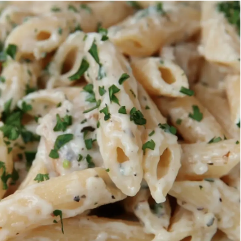

Chicken Alfredo

Ingredients
- 1 ½ lb chicken breast(680 g), cubed
- 2 tablespoons butter
- ½ teaspoon dried oregano
- ½ teaspoon dried basil
- ½ teaspoon salt
- ½ teaspoon pepper
- 16 oz penne pasta(455 g), cooked
- ¼ cup fresh parsley(10 g)
- ¼ cup shredded parmesan cheese
Steps
- In a pan over medium-high heat, melt butter, then add the chicken breast.
- Season with salt, pepper, oregano, and basil. Cook 8-10 minutes or until chicken is fully cooked. Remove from heat and set chicken aside.
- In the same pan over medium heat, melt butter and add the garlic. Cook until the garlic begins to soften.
- Add half of the flour to the garlic and butter, stirring until incorporated. Then add the rest of the flour and stir.
- Pour in the milk a little bit at a time, stirring well in between, until fully incorporated and sauce begins to thicken.
- Season with salt, pepper, oregano, and basil, and stir well to incorporate.
- Add parmesan cheese and stir until melted.
- Pour the sauce over cooked penne pasta, add the chicken and mix well.
- Add parsley and extra parmesan. Mix well.
- Enjoy!